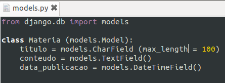
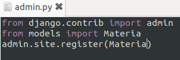
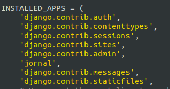
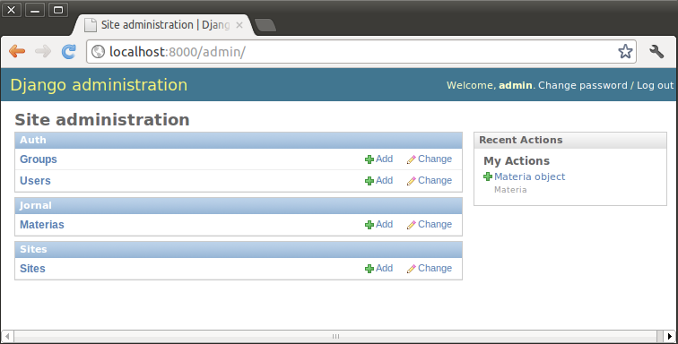
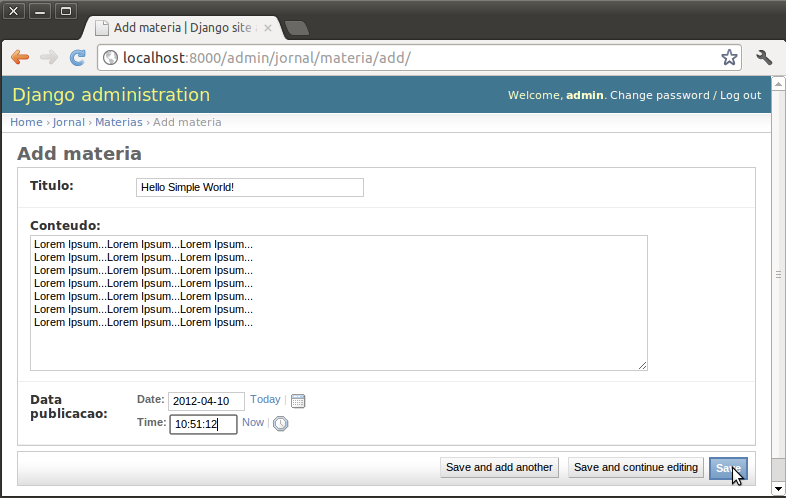

Primeiro Modelo(){
Dicas
Neste tópico iremos exemplificar a criação de um modelo para postagens. No caso chamaremos este de Jornal, uma forma de familiarizar-se com os primordios deste Framework. Primeiramente, crie uma pasta chamada jornal dentro da pasta meu_site.
Dentro desta pasta você deverá inserir três arquivos:
- __init__.py
- models.py
Dentro deste arquivo escreva o código abaixo e salve, lembrando de respeitar a identação do python:
 - admin.py
Dentro deste arquivo escreva o código abaixo e salve:

Editemos novamente o arquivo settings.py agora para adicionar o Jornal online.
Adcione após a linha 'django.contrib.admin', a linha 'jornal':

Atualize novamente seu navegador no endereço localhost:8000/admin, você o encontrará assim:

Se você clicar em Materias você irá perceber um erro no Banco de Dados. Isso acontece porque você não possui ainda um banco para esse modelo. Assim, clique em cria_run.bat ou cria_run.sh.
Atualize novamente seu navegador e clique em Materiais e observe a mudança.
Agora no canto superior esquerdo clique em Add materia e crie uma Matéria:

}